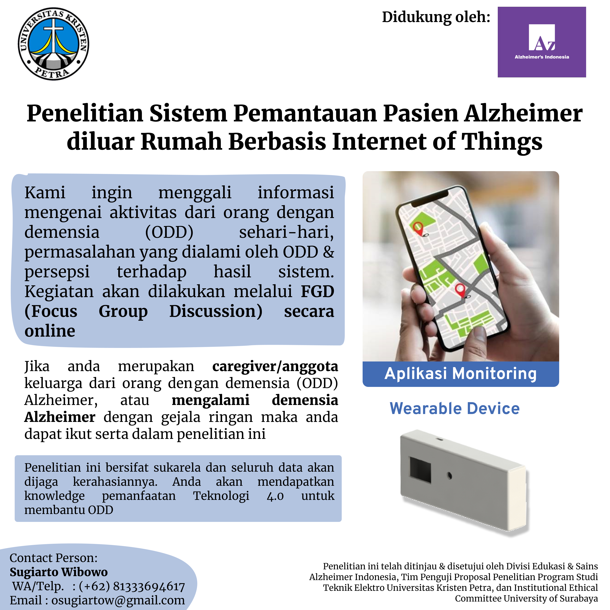

Outdoor Alzheimer's Patient Tracking System Based on Internet of Things
Abstract
Alzheimer's is a disease that attacks brain cells in humans. The consequences of this disease include memory loss, motor skills, social, etc. Until now, there is no proven effective drug to treat Alzheimer's disease, but there are methods that have been tested through research to slow the severity of Alzheimer's disease, namely by doing activities outside the home. Generally, for activities outside the house, the patient will be accompanied by a caregiver. Still, there are cases where the patient has urgent or personal interests, so they cannot invite the caregiver. When the patient leaves the house alone, several problems may be faced: getting lost or forgetting the way home and falling. To overcome these problems, the caregiver needs a system that the caregiver can use to monitor the activities of Alzheimer's patients when the patient is outside the home. The author makes a tool in the form of a wearable device that will be attached to the patient's belt or pants, the wearable device has a fall detection feature and a button to ask for help from the caregiver. When a fall is detected or lost, the wearable device sends GPS coordinates to the server, and the patient's location can be monitored through the android application used by the caregiver.
Background
 Alzheimer's disease is a disease that affects many people around the world and knows no age. In fact, based on research, every 3 seconds, 1 person in the world is experiencing Alzheimer's. In 2019 there were 55 million people who experienced dementia worldwide, and this is expected to increase to 78 million people in 2030 and 139 million people by 2050.
The country that contributes the most Alzheimer's patients are China, India, South Asia, and western Asia Pacific
(Alzheimer’s Disease International).
Alzheimer's disease is a disease that affects many people around the world and knows no age. In fact, based on research, every 3 seconds, 1 person in the world is experiencing Alzheimer's. In 2019 there were 55 million people who experienced dementia worldwide, and this is expected to increase to 78 million people in 2030 and 139 million people by 2050.
The country that contributes the most Alzheimer's patients are China, India, South Asia, and western Asia Pacific
(Alzheimer’s Disease International).
 Alzheimer's patients in Indonesia are continuously increasing each year. In 2017 there were 0.39 million people, which continued to increase to 0.46 million in 2020 and is expected to increase by 0.52 million in 2024 (Statista).
Alzheimer's disease itself until now there is no cure, but several doctors provide treatment in the form of therapy or drugs to help prevent the disease Alzheimer grow severe by active outside the home. However, Alzheimer's patient's activities outside the home have several problems that may be encountered, including getting lost or forgetting the way home, having difficulty communicating, and easily falling because of the ability to decrease motor skills and forgot the time right then and there.
Alzheimer's patients in Indonesia are continuously increasing each year. In 2017 there were 0.39 million people, which continued to increase to 0.46 million in 2020 and is expected to increase by 0.52 million in 2024 (Statista).
Alzheimer's disease itself until now there is no cure, but several doctors provide treatment in the form of therapy or drugs to help prevent the disease Alzheimer grow severe by active outside the home. However, Alzheimer's patient's activities outside the home have several problems that may be encountered, including getting lost or forgetting the way home, having difficulty communicating, and easily falling because of the ability to decrease motor skills and forgot the time right then and there.
Focus Group Discussion
 The author also did Focus Group Discussions (FGD) with the Alzheimer's caregiver for as many as two meetings. The volunteers were joined with the help of Alzi(Alzheimer Indonesia), who helped the author to post a poster about the research. In the first discussion, the topic was the common problems that Alzheimer patients experienced, the patient's behavior, the tragedy, the proposed system from the author, and the open session. Next, in the second discussion, the author presented the proposed system, namely Alzo, in a non-technical explanation. Also, the author explains the further development, commercialization possibility, and suggestions from the volunteers.
Block Diagram
The system consists of three parts: the wearable device used by the patient to track the patient's activity; the server, which handles the database and data exchange with the wearable device, android, and web client; the Android mobile application that the caregiver will use for monitoring their patient. The components in the wearable device include OLED Display, ESP32 MCU with SIM800L as the Radio CoProcessor with GSM capability (2G), GPS Module, Tactical Push Button, IMU Sensor (MPU 6050), and the LiPo Polymer battery to power the wearable device. On the server side, the author uses Flask as the web server, MySql as the database to store the data, MQTT broker is also installed on the server, and Firebase for the push notification feature to the Android client. The Android client uses Google Maps to visualize the patient and caregiver's location. The author generated the key using Google Cloud to use the Google Maps API.
The overall system flow is relatively easy to understand. It starts with a wearable device; after booting, the wearable device will run the algorithm to calculate and recognize the fall action; if it happens, then the wearable device will send the location coordinate and its required data to the server through the MQTT using the internet with 2G Connection. Besides running the fall detection algorithm, the wearable device also reads the help push button state; if the push button is pressed, it will send location coordinates just like when a fall is detected. On the server side, when they receive data from the wearable device, it will immediately save into the database. Also, the server will notify the Android mobile client about the incident that happened with the corresponding patient. Lastly, on the Android client, the caregiver will get a notification and also can track the location and the incident from the application. The caregiver can also get real-time directions to go to the patient's last location when the incident happened.
To classify between normal activity and fall action, the author recorded data while doing daily activities and fall actions. The data is then used in the algorithm. The normal activities are up, walking, jumping, riding a bicycle, sitting down, jogging, bowing, and squatting. While the fall actions forward, backward, side left, and side right.
Experiments
The first experiment sends data from the wearable device when the patient is lost. This was done by triggering the help push button, checking the data in the server database, checking the received notification, and tracking the patient's location in the Android mobile application.
The second experiment was to test the fall detection algorithm. This was done using the wearable device for daily activities and some fall action. The results are the algorithm didn't falsely recognize the normal activity as a fall action, and the algorithm can recognize the fall action without any wrong.
Contributing Organizations & People
This research was successfully conducted with the help of some people and organizations. I would like to thank:
- Mr. Indar Sugiarto as my thesis supervisor.
- The Institutional Ethical Committee University of Surabaya as the committee that granted the ethical clearance.
- Alzi (Alzheimer Indonesia) as the media for reaching out to volunteers.
- Institute of Research and Community Outreach of Petra Christian University as the funding.
- The volunteers (Mr. Nugroho, Mrs. Nur, Mrs. Theresia, Mrs. Imelda, and Mrs. Wiryanti) willingly share their experiences with the patients and opinions regarding Alzo.
- and other people who I couldn't mention one by one.